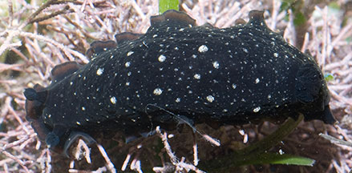
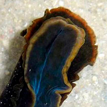
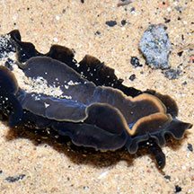
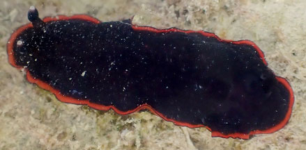

|
|
| nudibranchs text index | photo index |
| Phylum Mollusca > Class Gastropoda > sea slug > Order Nudibranchia |
| Black
dendrodoris nudibranch Dendrodoris nigra Family Dendrodorididae updated Mar 2020 Where seen? This blackish nudibranch is sometimes seen on some of our seagrass meadows. Features:5-8cm long. Broad fleshy body smooth, generally blackish with whitish speckles. According to Bill Rudman, the white spots are of two different kinds. Some spots are simply pigment spots on the skin while others are small white glands producing a milky acidic secretion. Sometimes mistaken for Dendrodoris fumata which looks similar in shape and are red when young and black as adults. Usually Dendrodoris nigra has 10 -15 smaller gills forming a tight cup-shaped circle, placed further to the back and lacks dark blotches on a lighter background. Dendrodoris fumata has 5-6 large bushy feathery branching gills that when expanded, may cover the width of the animal. But the species can be definitively told apart only by looking at small internal features. |
 Cyrene Reef, Aug 11 |
 Underside. |
| Black dendrodoris nudibranchs on Singapore shores |
On wildsingapore
flickr
|
| Other sightings on Singapore shores |
 |
 St John's Island, Feb 24 |
Links
|